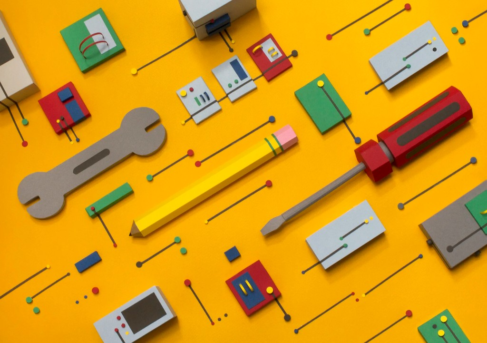

What I tell Others About What I Do for a Living
Product Design, plain English, and the version of my job I save for my mom.
April 20, 2020

Art commission by Riza Cruz
“What do you do for work?”
I must have answered that question a hundred different ways. Sometimes I go deep and try to do the work justice, attempting to paint a very clear picture of the world I live in professionally. Sometimes I'm not in the mood to talk or realize the person I'm talking to has little knowledge of technology, and I reach for the shortest but somewhat true thing I can say. For my mom, that thing is usually: “I do computer stuff” (or the equivalent in Vietnamese). She says “oh” (or the equivalent in Vietnamese). No questions asked. Everyone moves on.
This post is the longer response to how I describe product design if I'm being earnest, how I got here, and why “computer stuff” isn't wrong but just my cop-out answer.
How I usually explain Product Design
I start with the product part. A product, in the software world, is usually an app or a website people use to get something done, like book a trip, pay a bill, message a friend, or do their job. I usually pick a popular service that everyone knows about.
I tell people I help teams figure out how software should behave, what people need, what order things should happen in, and what the screens should communicate so the whole thing feels straightforward. If they want a single phrase, I say something like “I design how digital products work and feel, not just how they look.” I most definitely emphasize that last part.
That's still a mouthful so I like using the “building a house” analogy. You're not only picking paint colors; you're deciding where the doors go to facilitate how people move in and out. To drive the point across with the analogy, there's also a lot that goes into thinking about these doors. What doorknobs are the most accessible to certain folks? What style door makes sense? If I want to be extra colorful, I'll liken design to creating a blueprint of the entire house, so that engineers and other folks know exactly how to build it and with what materials. It's all about creating with intention to help others get something done, usually in the most cost-effective way.
What the job actually looks like week to week
If someone wants more detail, I talk about what working actually looks like. I spend a lot of time in meetings with product partners about priorities, with engineers about what's feasible and what we're trading off, with researchers or customer-facing teams about what we're learning from users, and sometimes with users themselves. I sketch flows, prototype ideas, and test them to see where they might not work.
I also care about the craft like typography, spacing, motion, and the tiny things that really elevate a product or service. The part of my work where I create beautiful interfaces is only a tiny sliver of what I actually do, because the part that's hardest to see from the outside is judgement—all the meetings and decision-making about what not to build, what to simplify, and what can be a compromise.
It's hard to convey this in a short pitch or small talk. That's why I'm grateful when people meet me halfway with curiosity and want to learn more. When I do get blank stares though, I don't take it personally. Job titles in tech are a mess.
My path here
I didn't grow up wanting to become a product designer. I didn't even know what it was until my mid 20s. I did, however, have an interest in graphic design and an appreciation for thoughtful experiences due to my growing up playing lots of video games and watching cartoons. So, my journey was a winding line through visual design via Photoshop in high school, burning out from working as a medication technician, pivoting to UX at an HVAC company, collaboration with engineers, learning to speak the language of business outcomes, and eventually landing in tech forward companies. I lead with curiosity and a want to make things better, which are the things that Design really leans into. It's always “why is this difficult?” And then “there's got to be a better way to do this”.
Along my journey, I learned that Design isn't a checklist nor is it linear. It's a way of making decisions—often messy, often negotiated—with other people who might care about different risks but share the same goals. The longer I've done this, the more I respect that social aspect. The pixels are just the visible part of my job, but the behind the scenes alignment of people is the hardest to show.
When I keep it simple
For family gatherings, small talk, or anyone who doesn't need the full map, I still say I work with computers. I use them to help build the products and services that people use. I don't need to talk about wireframes nor Figma. I don't think the shorter version is a complete disservice. The full version of what I do lives here, and in the conversations where the stakes are higher. Both forms of my answers are true.